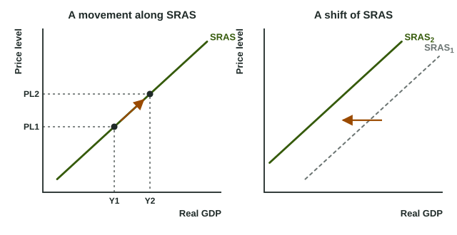

Aggregate demand tells you how much real output people plan to buy at each price level. The other half of the model is how much firms are willing to produce. In the short run, that depends on a simple fact about workplaces: many costs are fixed for a while, even when the prices firms charge change.
Sticky wages and the upward slope
Most workers are paid a nominal wage agreed in advance: a contract, a union agreement, a salary reviewed once a year. Many supplier prices are set in advance too. Economists call these sticky wages and sticky prices. Now suppose the price level rises by 5 percent. A firm sells its output for 5 percent more, but its wage bill has not changed yet. Each extra unit is more profitable, so the firm hires more hours and produces more.
Add that up across every firm and you get short-run aggregate supply (SRAS): the total real output firms supply at each price level while nominal wages and some prices are fixed. It slopes up: a higher price level goes with more real output.

A change in the price level moves the economy along SRAS (the left graph), from PL1 and Y1 to PL2 and Y2. The axes are the same as for aggregate demand: Price level on the vertical axis, Real GDP on the horizontal one.
The long run is the period long enough for every contract to be renegotiated and every price to adjust. Then the reason for the slope disappears; the next topic shows what supply looks like when that happens.
What shifts SRAS
Anything that changes what it costs to produce each unit, at a given price level, shifts SRAS (the right graph). Higher costs mean less output supplied at every price level, a shift left; lower costs shift it right.
| Shifter | SRAS shifts left when... | SRAS shifts right when... |
|---|---|---|
| Input prices | nominal wages, energy or raw material prices rise | they fall (cheaper oil, lower wages) |
| Productivity | output per worker falls (a disaster damages factories) | new technology or better training raises output per worker |
| Government actions on firms | taxes per unit or costly rules rise | subsidies per unit are paid, rules are eased |
| Expected inflation | expected inflation rises: workers expect faster price growth and bargain for higher nominal wages | expected inflation falls: workers expect slower price growth and accept smaller raises |
A sudden change in costs across the whole economy, such as a jump in oil prices or a drought, is a supply shock.
Worked example: which way does SRAS move? Country V's average nominal wage is 20 dollars an hour, oil is 60 dollars a barrel and each worker makes 10 units an hour. Compare three changes, one at a time.
- Oil rises to 90 dollars. Each unit costs more to make at the same price level, so SRAS shifts left.
- Workers make 11 units an hour at the same wage. The labor cost of each unit falls from dollars to dollars, so SRAS shifts right.
- The wage rises to 22 dollars with 10 units an hour. The labor cost per unit rises from 2 to 2.20 dollars, a 10 percent rise in the wage, so SRAS shifts left.
Common slip: "Workers got a raise, so they spend more and SRAS shifts right." Workers' spending is part of aggregate demand. On the supply side, a wage is a cost, so a rise in nominal wages without more productivity shifts SRAS left. Keep the two sides of the economy apart: who is buying (AD) and what it costs to produce (SRAS).
Shift or movement?
Ask the same question as with AD: did the variable on the axis change? If the price level changed, the economy moves along SRAS. If costs changed at a given price level, the curve shifts. Draw the old curve as SRAS1, the new one as SRAS2, and an arrow between them with its cause written next to it ("oil prices rise").
One more check: a change in spending (consumer confidence, government purchases, exports) never moves SRAS directly. It shifts AD. Many exam slips come from shifting the wrong curve, so name the side of the economy first: buyers or producers.